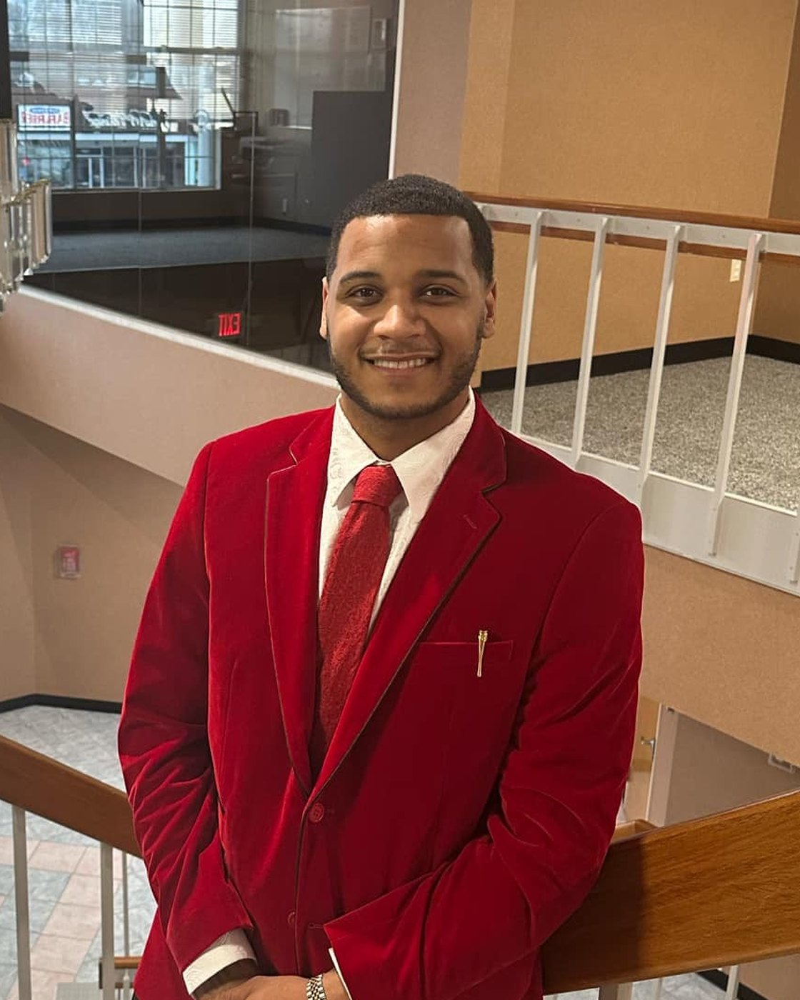

Strategic consulting
What is this business actually trying to become, and what has to change before it can?
Consulting · Growth operations · Relationship management · New York
Better things come to those who go out and get them.
At nineteen I was out of the Marine Corps, managing part time at UPS, and headed nowhere in particular. Then a stranger in a Maserati pulled up outside a bank and talked to me for fifteen minutes. I have been building on that conversation ever since.
The story
I was nineteen. The Marine Corps was behind me and I was a part time manager at UPS, with no plan much past the next shift.
I was visiting my mother that day, in a part of town I did not even live in. A man was getting out of a Maserati near a bank. He traded options and worked on Wall Street. We started talking, and the hello turned into fifteen minutes about business, money, and what was possible if you were willing to take a different road.
Then he invited me to see his office. He said that if I was serious I would have to quit my job. He offered me five hundred dollars to do it.
So I went.
Phones ringing across the whole floor. Salespeople moving from one call to the next. Controlled chaos, and more ambition in one room than I knew existed.
Then I read the board. More than a hundred thousand dollars in sales. One week.
I stood there and understood that the world I had been living in was not the only world there was. I never went back to UPS.
None of it was planned. I was not hunting for an opportunity. I was visiting my mother. You rarely know you are standing at the start of your story. You work it out later, looking back.
I had gone there just to look.
The work
Strategic consulting, business growth support, operational development, and the relationship management that holds all three together. The aim does not change: strengthen what you already have, widen what you can reach, and build relationships that outlast the project.
What is this business actually trying to become, and what has to change before it can?
Opportunities are easy to spot and easy to waste. This is the part where they turn into growth you can measure.
Systems and standards, so the business keeps moving when people and circumstances change. I learned this one the expensive way.
The work that happens after the sale. The least glamorous thing I do, and the reason people stay.
Then they find the rest follows. A conversation is enough to begin.
Start a conversationWho it is for
Ambitious professionals, business owners, entrepreneurs and organizations who are not looking for help holding their position.
They want to strengthen their presence, build relationships that mean something, widen their reach, and turn what is already in front of them into growth they can point at. My job is to help them move: find the opening, build the relationships around it, and put a strategy behind it that holds.
People say good things come to those who wait. I think better things come to those who go out and get them.
What it cost
2024 into 2025 was the hardest stretch I have had. Several people I had hired left at once to build businesses of their own. Some of them were friends. Some were family. I had brought them in because I wanted to hand people I cared about the kind of opportunity somebody once handed me.
What they could not see from where they stood was the rest of it. Materials, product, payroll, office, overhead, service, every cost a customer never meets. Revenue is not profit. I learned that one properly that year.
So I rebuilt. I kept the customers, kept the standard, and kept going. I do not look back on it bitterly. It is the lesson that changed how I lead.

As a kid I decided that a hundred thousand a year meant you had made it. Then I started meeting people who had genuinely reached financial freedom, and they taught me what the number never could.
Money stops being the point. Your health. Your family. Your friends. What you got to see. Who you helped. What you know and can pass on.
That was in me early. Long before any of this, I used to say that if I ever got free I wanted to be a guidance counselor. I liked the idea of being an undercover millionaire: someone who walks quietly into another person's life, works out what they are up against, and hands them the one thing that changes their direction.
So no milestone has ever satisfied me on its own. Each one only raises the question of what to do with it. Money buys freedom. What you do with the freedom is the part that counts.
If you started doing what I do tomorrow, the first thing I would tell you is to stop stressing. Create value. Treat people properly. Learn everything you can. Work hard, without letting the work become the whole of your life. Life is happening while you build the business.
I am writing a book: the lessons, the mistakes and the perspective from a career spent in sales, business and relationships. Passing on what I know has always mattered to me more than collecting titles.
Get in touch
Partner, customer, investor, someone looking for work, or someone who simply thinks we could build something together. Reach out.
You do not need it all worked out first. Bring an idea, an opportunity, a question, or nothing more than a willingness to trade what we each know and see where it goes.
premierprofessionalsolution@gmail.com